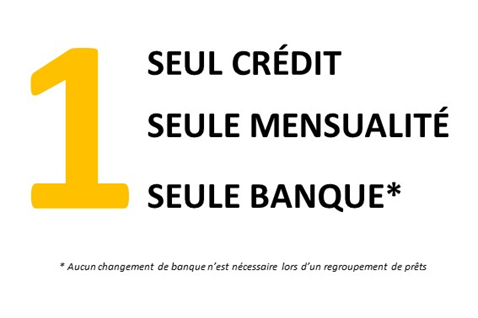

Le regroupement de crédits est notre cœur de métier
Bénéficiez de notre expertise en regroupement de crédit, c'est sans engagement !
Quoi ?
Le regroupement de crédits est également appelé rachat de crédits ou consolidation de dettes ou restructuration de dettes.
Cette solution, comme son nom l’indique, consiste à regrouper l’ensemble de vos crédits en cours en un seul prêt avec une mensualité unique plus faible.

Toutes nos solutions de regroupement de crédits à BOULOGNE SUR MER ne demandent pas de changement de banque.
Vous gardez votre compte dans votre banque actuelle, et le prêt sera prélevé tous les mois.
Nous nous occupons de toutes les démarches administratives.
Pour quoi ?
Un rachat de prêts peut être utilisé pour :
- Améliorer une situation financière aggravée
- Alléger vos mensualités de crédits et retrouver une capacité d’épargne
- Une diminution des taux
- Financer un nouveau projet (voiture, travaux, acquisition immobilière…)
- Obtenir une trésorerie de précaution pour réaliser un investissement…
Dans le cadre d'un regroupement de crédits, vous pouvez intégrer des prêts de natures différentes :
crédit immobilier, crédit consommation, prêt personnel, dette familiale, trésorerie et découvert bancaire.
Cependant, vous n'êtes pas obligé de faire racheter l'ensemble de vos crédits.
Vous pouvez par exemple exclure votre prêt immobilier et éviter de garantir votre bien en hypothèque.

Pour qui ?
TROP DE CREDITS ? Anticipez les moments difficiles pour repartir du bon prêt.
NATIONAL FINANCE, spécialiste en rachat de crédits, peut vous aider et vous proposer des solutions financières adaptées à votre situation pour remettre votre budget d’aplomb !
Une retraite à l’horizon, l’arrivée d’un enfant, le financement des travaux, une baisse des revenus ou encore une accumulation excessive de crédits,
n’attendez pas qu’il soit trop tard pour diminuer vos mensualités

Il n’y a pas d’âge pour avoir des projets !
Financement immobilier, renégociation de votre prêt immobilier, calcul de budget avant l’achat.

Au-delà de la course au meilleur taux, le métier de courtier en crédit requiert une parfaite connaissance du mode de fonctionnement et de l’offre des organismes de prêts.
Primo accédant, achat d’un terrain et construction, résidence principale (neuve ou ancienne), résidence secondaire, immeuble locatif, prêt relais… les cas de figure sont multiples.
A chacun d’entre eux correspond une solution personnalisée.
Nous vous aidons à réaliser et optimiser votre projet immobilier.
Avant de vous engager dans un projet immobilier, n’hésitez pas à venir nous voir pour connaître votre capacité d’emprunt.
NATIONAL FINANCE vous propose un entretien de découverte gratuit et sans engagement.
Divorcer ou se séparer peut fragiliser un budget.
Vous êtes en pleine séparation et vous souhaitez conserver le bien que vous avez acheté à deux ?
Vous devrez racheter la part de l’autre conjoint, via le versement d’une soulte.
C’est ce que l’on appelle le « rachat de soulte ».

NATIONAL FINANCE travaille avec l’ensemble des organismes bancaires spécialisés dans le regroupement de crédits.

Le rachat de soulte s’applique pour tous les biens en indivision.
Il est applicable également dans le cadre d’une succession lorsque le bien immobilier est détenu par plusieurs héritiers.
D'autres crédits en cours peuvent être ajoutés au dossier de rachat.
Vous avez également la possibilité d’ajouter une trésorerie complémentaire pour démarrer ce nouveau chapitre de votre vie.